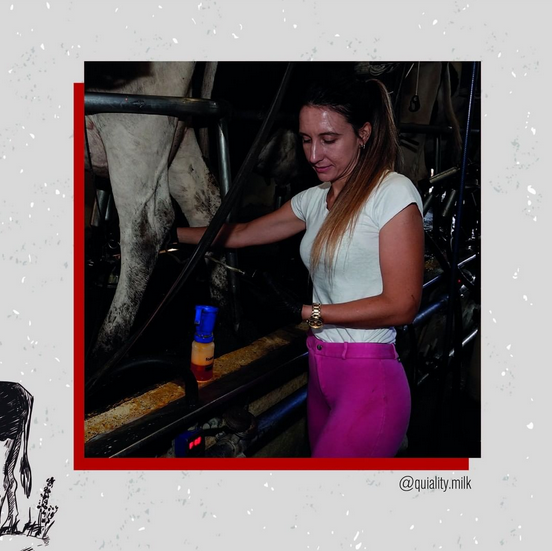

¡Bienvenidos a Quality Milk! La consultora especializada en calidad de
leche que brinda asesoramiento integral a más de 30 tambos y empresas
de la industria lechera. Soy Enriqueta Bottini, Veterinaria UBA,
PhDCONICET, Docente Microbiología UNICEN e integrante de la comisión
técnica de mastitis APROCAL.

Quality Milk nace con el objetivo de brindar un 𝐚𝐛𝐨𝐫𝐝𝐚𝐣𝐞 𝐡𝐨𝐥í𝐬𝐭𝐢𝐜𝐨 a los
sistemas de producción lecheros actuales. Como todos sabemos, el mundo
en el que vivimos nos desafía constantemente: a responder a la demanda
alimenticia de una población en constante crecimiento, a lograr sistemas
de producción sustentables y preservar el bienestar animal. ¿Podremos
con todo esto? ¡Yo creo que sí! Y eso me motiva a diario a trabajar y
perseguir esta causa. Haber vivido en el campo🌱 por muchos años me dio
un plus para ser cada día más empática y no perder criterio de qué es
viable a la hora de trabajar. Diseñar soluciones realistas y que se
adapten a los sistemas de producción vigentes. Como en muchos aspectos
de la vida MENOS ES MÁS. Y cuanto más simple y práctica sea nuestra
forma de trabajar, basándose en objetivos claros, resultados medibles y
mucho compromiso, más podremos sostenerla en el tiempo y los resultados
no tardan en llegar.

Hoy les doy la bienvenida a Quality Milk para compartir con ustedes todo
lo que sé, lo que aprendo y mi pasión por lo que hago día a día. Aquí
van a encontrar novedades, inspiración, mucho trabajo en equipo, pero
por sobre todo 𝐜𝐨𝐧𝐨𝐜𝐢𝐦𝐢𝐞𝐧𝐭𝐨 y Contenido técnico que contribuye a la
formación de esta comunidad y hace la diferencia. ¡Bienvenidos!